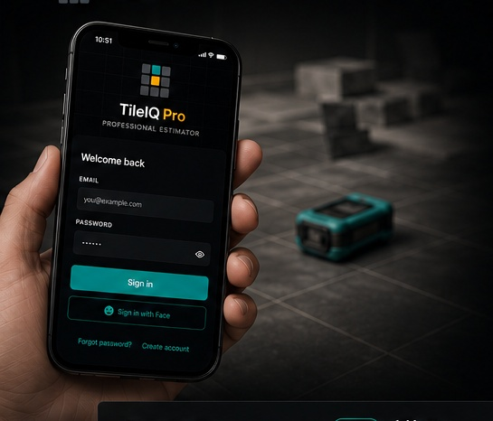
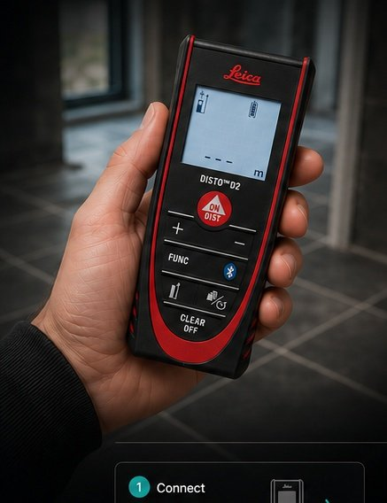
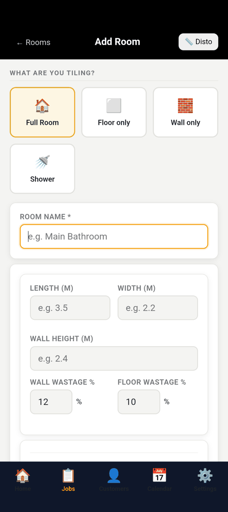

1. Enquiry
A new lead comes in — by phone, web form or AI Receptionist.

Run your tiling business from one app — measuring, calculations, quotes, customers, jobs, invoices and more.
A new lead comes in — by phone, web form or AI Receptionist.
Measure the space with your phone or Leica Disto.
Instant material & labour calculations. No guesswork.
Create a professional quote and send it in seconds.
Client accepts, you're booked in and the job runs in TileIQ.
Turn the finished job into a professional invoice, paid faster.
Use your phone or connect a Leica Disto for fast, accurate measurements.
TileIQ calculates exactly what you need. No waste, no running short.
Beautiful quotes & invoices that build trust and win more work.
AI answers your calls when you can’t and adds the job details straight into TileIQ.
Send measurements straight into TileIQ via Bluetooth. See how it works.
Access your jobs, quotes and invoices anywhere, anytime.
Connect a compatible Leica Disto to TileIQ via Bluetooth and send measurements directly into the app while you survey the job. No writing dimensions down. No typing them in again. No swapping between a laser measure, calculator and notebook.


Pair your compatible Leica Disto with TileIQ using Bluetooth.
Take your measurements normally while surveying the job.
The measurement appears in the app without retyping it.
Use the measurement in the room, material and quote workflow.
Never miss another job. Our AI Receptionist answers your calls, captures the important details and creates the job in your TileIQ account automatically. You stay focused on the work that matters.
Learn more about AI Receptionist →TileIQ helps tilers save time, look professional and grow their business.
“TileIQ has completely changed the way I work. Quotes in minutes instead of hours.”
“The AI receptionist is brilliant. I never miss a call or a job anymore.”
“The best tool I’ve found for tilers. Simple, fast and incredibly powerful.”
TileIQ is currently available at promotional pricing. Start your subscription while this offer is available and your promotional subscription price will stay locked in for as long as you remain continuously subscribed.
Join TileIQ now and secure the current promotional rate.
Lock in my price → Promotional pricing applies while your subscription remains continuously active.